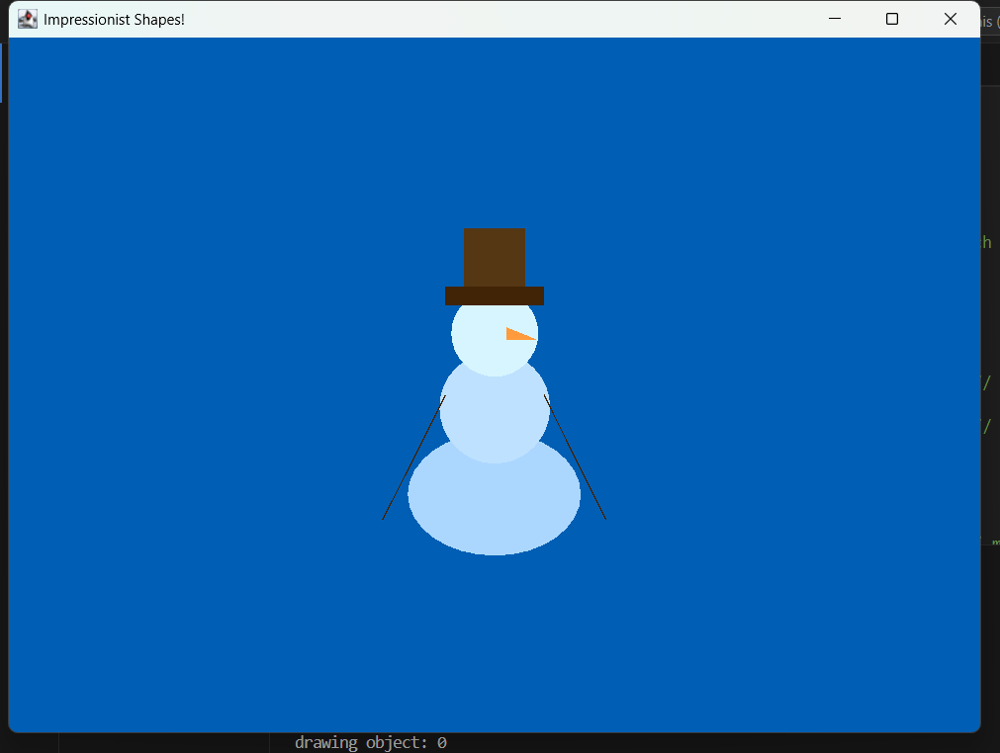

Shape abstraction
CShape defines shared state and abstract operations for calculating area and drawing.
Java · Object-oriented programming
A Java graphics project that models geometric shapes as objects, organizes them through inheritance, and renders them together in a drawing window.

At a glance
CShape defines shared state and abstract operations for calculating area and drawing.
Concrete classes implement circles, ellipses, lines, rectangles, squares, and triangles.
DrawingCanvas stores different shapes in a CShape[] array and draws each through the shared interface.
Object-oriented design
Inheritance relationships below are taken directly from the Java extends declarations.
Composition / supporting types: CPoint stores coordinates and CColor stores RGB values. They are used by shapes but do not extend CShape.
Explore the implementation
Open a file to inspect its complete source. Line numbers and Java syntax highlighting are included.
SOURCE FILES
The entry point and window that assemble and display the drawing.
1 2 3 4 5 6 7 8 9 10 11 12 13 14 15 16 17 18 19 20 21 22 23 24 25 26 27 28 | |
1 2 3 4 5 6 7 8 9 10 11 12 13 14 15 16 17 18 19 20 21 22 23 24 25 26 27 28 29 30 31 32 33 34 35 36 37 38 39 40 41 42 43 44 45 46 47 48 49 50 51 52 53 54 55 56 57 58 59 60 61 62 63 64 65 66 67 68 69 70 71 72 73 74 75 76 77 78 79 80 81 82 83 84 85 86 87 88 89 90 91 92 93 94 95 96 97 98 99 100 101 102 103 104 105 106 107 108 109 110 111 112 113 | |
SOURCE FILES
Abstract and concrete shape types. The inheritance chain is shown below.
1 2 3 4 5 6 7 8 9 10 11 12 13 14 15 16 17 18 19 20 21 22 23 24 25 26 27 28 29 30 31 32 33 34 35 36 37 38 39 40 41 42 43 | |
1 2 3 4 5 6 7 8 9 10 11 12 13 14 15 16 17 18 19 | |
1 2 3 4 5 6 7 8 9 10 11 12 13 14 15 16 17 18 19 20 21 22 23 24 25 26 27 28 29 30 31 32 33 34 35 36 37 38 39 40 41 42 43 44 | |
1 2 3 4 5 6 7 8 9 10 11 12 13 14 15 16 17 18 19 20 21 22 23 24 25 26 27 28 29 30 31 32 33 34 35 36 37 38 39 40 41 42 43 44 45 46 47 | |
1 2 3 4 5 6 7 8 9 10 11 12 13 14 15 16 17 18 19 20 21 22 23 24 25 26 27 28 29 30 31 32 33 34 35 36 37 38 39 40 41 42 43 44 45 46 47 48 49 50 51 52 53 54 55 56 57 58 59 60 61 62 63 64 65 | |
1 2 3 4 5 6 7 8 9 10 11 12 13 14 15 16 17 18 19 20 21 22 23 24 25 26 27 28 29 30 31 32 33 34 35 36 37 38 39 40 41 42 43 44 45 46 47 48 49 50 51 | |
1 2 3 4 5 6 7 8 9 10 11 12 13 14 15 16 17 18 19 20 21 22 23 24 25 26 27 28 29 30 31 32 33 34 35 36 37 38 39 40 41 42 | |
1 2 3 4 5 6 7 8 9 10 11 12 13 14 15 16 17 18 19 20 21 22 23 24 25 26 27 28 29 30 31 32 33 34 35 36 37 38 39 40 41 42 43 44 45 46 47 48 49 50 51 52 53 54 55 56 57 58 59 60 61 | |
SOURCE FILES
Small reusable value objects used by the shape classes.
1 2 3 4 5 6 7 8 9 10 11 12 13 14 15 16 17 18 19 20 21 22 23 24 25 26 27 28 29 30 31 32 33 34 35 36 37 38 39 40 41 42 43 44 | |
1 2 3 4 5 6 7 8 9 10 11 12 13 14 15 16 17 18 19 20 21 22 23 24 25 26 27 28 29 30 31 32 33 34 35 36 37 38 39 40 41 42 43 44 45 46 47 48 | |
Reproduce the result
From the directory containing the Java source files, compile the project and launch its main class.
javac *.java
java ShapesJava
Reflection
This project brings together several object-oriented programming ideas:
CShape and CPolygon define common structure without being instantiated directly.CCircle → CEllipse and CSquare → CRectangle.CShape[] array and calls each object's draw() implementation.CPoint and CColor manage coordinate and color data used by the shape objects.